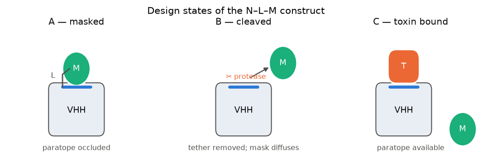
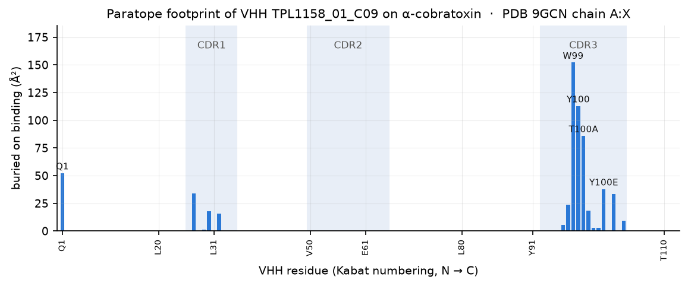
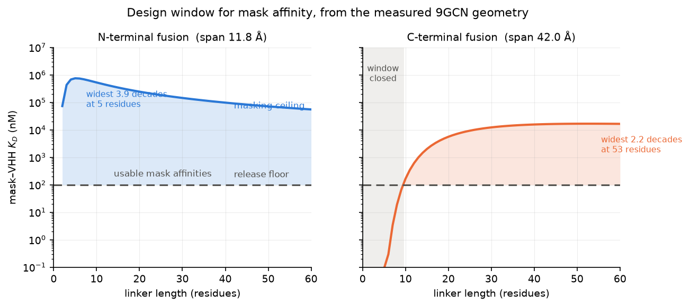
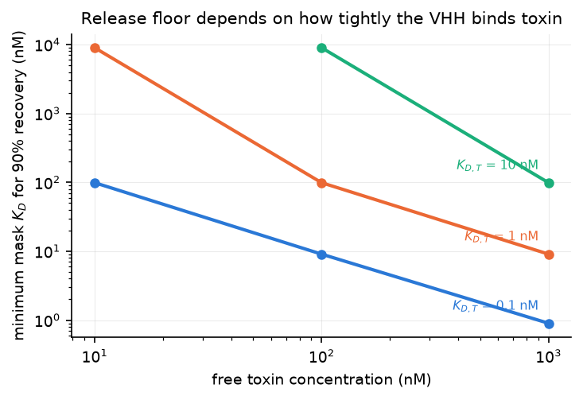

Computational design of a universal protease-activated nanobody switch
A nanobody that stays masked in circulation and binds venom toxin only after local
proteolysis. The regulatory function lives in a separately designed mask and linker, so the
neutralizing VHH is carried over unchanged.
Concept demonstration. This is a worked example showing the pipeline
running end to end on a real structure. It is not a therapeutic design campaign: the mask candidates
are deliberately simple, and no candidate here is proposed for synthesis.
The molecule is a single polypeptide: a designed mask M, a
protease-cleavable linker L, and the fixed nanobody
N. Proteolysis severs the tether and the mask diffuses away, leaving the
original paratope free to engage toxin T.
N–L–M --protease--> N + M then N + T ⇌ NT

The three design states. Masking must be effective while the tether holds and must fail once it is cut.
The central tension. The strongest mask is not the best mask. A mask tight
enough to block the paratope while tethered may stay bound after cleavage and keep blocking it. The
pipeline below turns that statement into a number.
Pipeline
Reference complexruns on CPU
Define the paratope from buried surface area on an experimental VHH–toxin structure, and measure
where a mask could be attached.
Tether thermodynamicsruns on CPU
Convert linker length and attachment geometry into an effective concentration, then into bounds on
the mask–VHH affinity.
Mask candidatesruns on CPU
Derive candidate masks from the structure, with scrambled and inert controls.
Fusion structure predictionneeds a GPU
Fold each construct and measure whether the mask reaches and covers the paratope.
Protease triggerneeds new data
Rank linkers for cleavage by the venom protease ensemble against a host negative panel.
Rankingneeds 4 and 5
Filter on feasibility, then take the Pareto front over the three scores with uncertainty attached.
Step 1 · The reference complex
Co-crystal VHH (TPL1158_01_C09) - alpha-cobratoxin (Naja kaouthia), solved by x-ray diffraction at 3.0 Å and deposited
2024-08-02. The asymmetric unit holds four independent copies of the complex, which
gives a free reproducibility check: the interface is measured four times.
3.0 Å
resolution
X-ray
600 Ų
interface area
1199–1216 Ų buried across 4 copies
16
paratope residues
>1 Ų buried on binding
17
CDR3 length
residues

Surface buried on complex formation, per VHH residue. 11 of the 16 paratope residues lie in CDR3; CDR2 contributes none.
Two findings that set up everything downstream.
The paratope is concentrated in CDR3 — 11 of 16 residues, against
4 in CDR1 and 0 in CDR2. And the N-terminal residue
Q1 is itself part of the paratope, burying
52 Ų. The two termini are not interchangeable
attachment points.
Geometry
Distance (Å)
Consequence for the design
N-terminus → paratope centroid
11.78
a short linker already reaches
N-terminus → nearest paratope residue
0.0
the N-terminus is in the paratope
C-terminus → paratope centroid
41.95
3.6× further to span
paratope maximum extent
21.75
surface a mask must cover
VHH radius of gyration
14.84
scale reference
Step 2 · What the tether is worth
A tethered mask is held near the paratope at an effective concentration set by the linker.
Treating the Gly/Ser linker as a worm-like chain with persistence length
4.5 Å and 3.8 Å per residue, the end-to-end
distribution gives Ceff at the distance the linker has to span — a distance measured in
step 1, not assumed.
Effective concentration against linker length, for the two attachment points. The N-terminal span of 11.78 Å and the C-terminal span of 41.95 Å come from the structure.
Masking and release then pull the mask affinity in opposite directions:
D; requiring ≥90% toxin binding after cleavage puts a floor under it.">Requiring ≤1% systemic leak puts a ceiling on the mask KD; requiring ≥90% toxin binding after cleavage puts a floor under it.
Step 2 · result — the design window
Imposing both requirements at once leaves a window of usable mask affinities. Whether that window
is open at all, and how wide it is, follows from the attachment geometry.

Usable mask affinity against linker length. Shaded region satisfies both requirements simultaneously.
3.9
decades of usable KD
N-terminal, 5-residue linker
2.2
decades of usable KD
C-terminal, 53-residue linker
≤9
residues where C-terminal fails
window entirely closed
753 µM
loosest mask that still blocks
at 5 residues, N-terminal
The quantitative result. An N-terminal fusion with a short linker gives
about 3.9 decades of usable mask affinity. A C-terminal fusion gives
2.2, and below 10 residues it has no window at all —
no mask affinity satisfies both requirements. The tether is worth so much that the mask can be
micromolar and still block: at 5 residues the ceiling is
753 µM, roughly
7619× above the release floor. Masks do not
need to be affinity-matured, and tight masks are actively harmful.
The release floor is the softer of the two bounds, because it depends on quantities a design does
not control: how tightly the nanobody holds toxin, and how much toxin is present.

The release floor against free toxin concentration, for three VHH–toxin affinities. The masking ceiling is unaffected.
Step 3 · Mask candidates from the structure
A mask has to engage this paratope. One peptide is already known to do that: the toxin's own
contact segment. Grafting it needs no generative model and brings its own controls.
Mask
Sequence
Kind
Origin
epi1
RGKRV
epitope graft
cobratoxin 33-37, 5 epitope residues
epi1_half
RGK
truncated
N-terminal half of the graft
epi1_scram
RGKVR
scrambled control
same composition, shuffled (seed 42)
epi2
WCDAF
epitope graft
cobratoxin 25-29, 4 epitope residues
polyG
GGGGGGGG
inert control
no designed interaction; masking should fail
Note on the candidates.epi1 is the tip of
α-cobratoxin loop II, the region carrying the residues that drive receptor binding — so this VHH
neutralizes by covering the toxin's functional site, and that same peptide is the natural mask.
epi2 carries a free cysteine and is retained as a deliberate
counter-example: it would scramble disulfides in a real graft. polyG has
no designed interaction and should fail.
26 constructs span 5 masks ×
5 linker lengths (5, 10, 15, 20, 30
residues) plus the free VHH, from 122 to
160 residues.
Step 4 · Folding the fusion needs a GPU
Steps 1–3 settle geometry and thermodynamics. They cannot say whether a particular mask sequence
folds back and covers the paratope. Because the fusion is a single chain, ESMFold predicts it
from sequence alone with no MSA, and a 160-residue construct folds in seconds on a free T4 — which
AlphaFold 3, Boltz-2, RFdiffusion and BindCraft would not do comfortably.
Open the notebook in Colab → It folds all 26
constructs, measures paratope occlusion against the free VHH, and contrasts the grafted mask with
its scrambled and poly-glycine controls. The contrast is the informative quantity: without it, a
prediction showing a tethered peptide near its anchor says nothing about design.
What a predicted structure is not. ESMFold returns one structure per
sequence. A mask lying against the paratope is a hypothesis about the masked state, not a masking
efficiency and not a KD. pLDDT is a confidence measure, not a folding free energy.
Steps 5–6 · What is not computed here
Component
What it would contribute
What it needs
RFdiffusion / BindCraft
mask backbones beyond grafted epitopes
GPU; BindCraft also needs AF2 weights and PyRosetta
AlphaFold 3 / Boltz-2 / Chai-1
the VHH–toxin complex and mask–toxin competition
GPU, model access
BioEmu-2
conformational ensembles instead of one structure
GPU; multichain support is recent
CleaveNet
generated linkers with a target cleavage profile
trained on 18 human MMPs; snake venom metalloproteinases are out of distribution
Score 2, protease trigger
selectivity for the bite-site protease ensemble
peptide-cleavage data on venom proteases against a host negative panel — this does not exist yet
The honest gap. Score 2 is not a modelling problem that better software
solves. The training data for venom-protease substrate specificity has to be generated, and that is
wet-lab work. Published SVMP profiling shows a P1′ leucine preference shared with host MMPs, so
selectivity between venom protease and host protease is the real obstacle.
Reproducing this
git clone https://github.com/Natalija-Stepurko/dtu_postdoc cd dtu_postdoc && uv venv && uv pip install -r requirements.txt
for s in src/s0*.py; do python "$s"; done
Each stage writes a JSON file of its results; the figures and this page are generated from those
files, so no number here is typed by hand.
References
Damsbo A. et al. Co-crystal structure of VHH TPL1158_01_C09 with α-cobratoxin.
PDB 9GCN
Ahmadi S. et al. Nanobody-based recombinant antivenom for cobra, mamba and rinkhals bites.
Nature 647:716–725 (2025). doi:10.1038/s41586-025-09661-0
Desnoyers L.R. et al. Tumor-specific activation of an EGFR-targeting probody enhances therapeutic index.
Sci Transl Med 5:207ra144 (2013). doi:10.1126/scitranslmed.3006682
Zhou H.-X. Loops in proteins can be modeled as worm-like chains.
J Phys Chem B 105:6763–6766 (2001). doi:10.1021/jp011355n
Lin Z. et al. Evolutionary-scale prediction of atomic-level protein structure with a language model (ESMFold).
Science 379:1123–1130 (2023). doi:10.1126/science.ade2574
Martin-Alonso C. et al. Deep learning guided design of protease substrates (CleaveNet).
Nat Commun 17:54 (2026). doi:10.1038/s41467-025-67226-1
Pacesa M. et al. One-shot design of functional protein binders with BindCraft.
Nature 646:483–492 (2025). doi:10.1038/s41586-025-09429-6
Bennett N.R. et al. Atomically accurate de novo design of antibodies with RFdiffusion.
Nature 649:183–193 (2025). doi:10.1038/s41586-025-09721-5
Shrake A., Rupley J.A. Environment and exposure to solvent of protein atoms.
J Mol Biol 79:351–371 (1973). doi:10.1016/0022-2836(73)90011-9